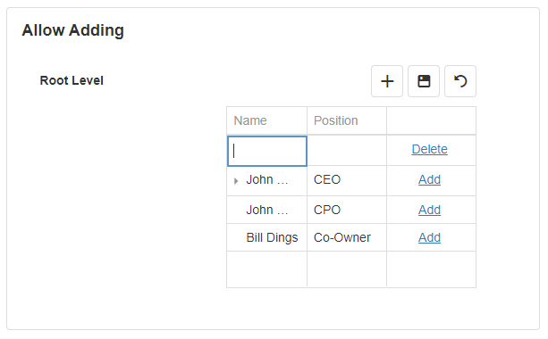
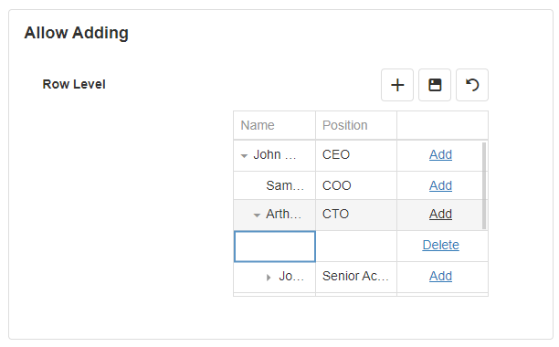
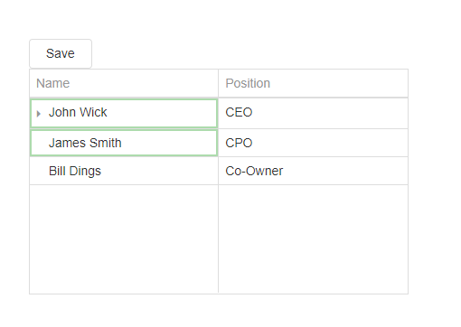
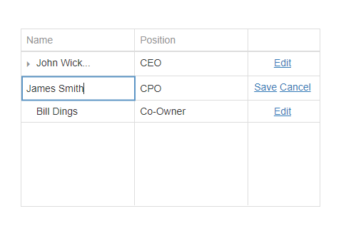
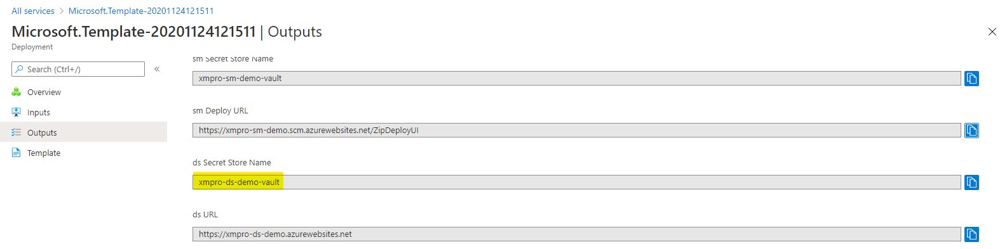
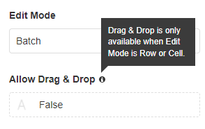
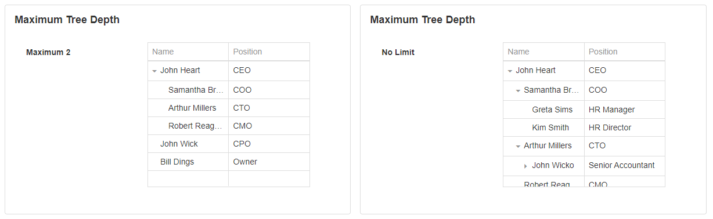
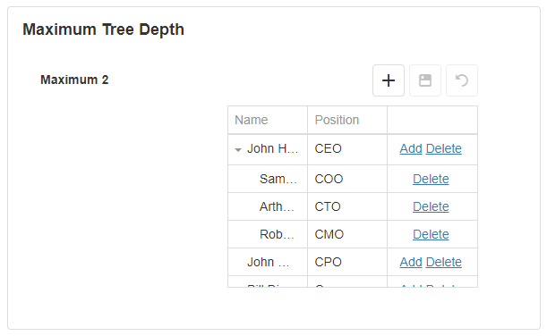
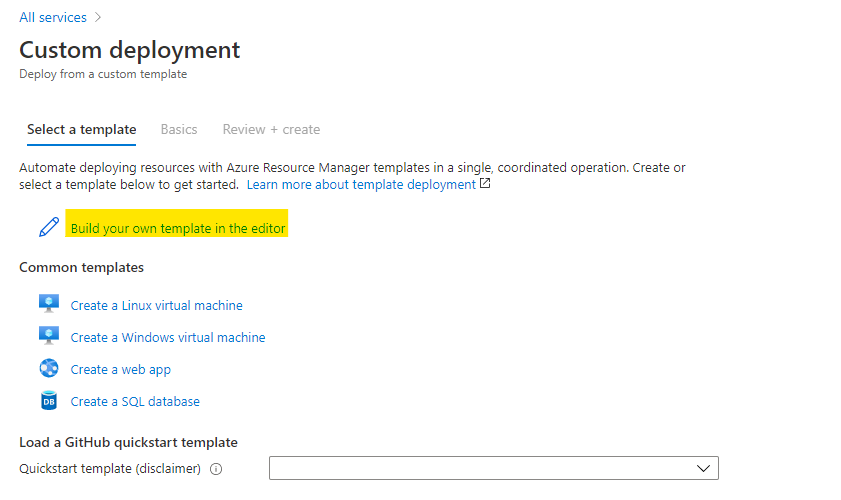
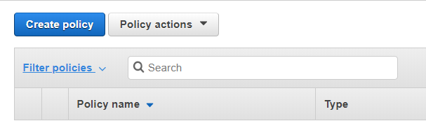

Tree Grid
Note
Some images in this document may be missing and need to be migrated from the original GitBook documentation.
Tree Grid Properties
Appearance
Common Properties
You can change the visibility of the Tree Grid.
See the Common Properties article for more details on common appearance properties.
See the Data Grid article for details on other common grid appearance properties: Show Borders, Show Headers, Show Column Lines, Show Row Lines, and Enable Paging.
Define how the scrollbar behaves:
- Virtual: Rows are loaded when they get into the viewport and removed once they leave it.
- Infinite: Each next page is loaded once the scrollbar reaches the end of its scale.
- Standard: The pager informs the main navigation and scrolling is available only if the rows do not fit.
- None: There is no scrollbar. Instead, the control grows to fit the number of rows.
Behavior
Common Properties
You can disable the Tree Grid.
See the Common Properties article for more details on common behavior properties.
See the Data Grid article for details on other common behavior properties: Allow Selection, Allow Deleting, Allow Updating, Allow Search, Enable Column Filtering, Enable Row Filtering, and Auto-Adjust Column Widths.
Tip
When searching a Tree Grid, the search results include their parents:
- If your result includes a parent, the children will not be available to expand unless they also meet the search criteria.
- If your result includes a child, the parents are listed for navigation - even if they don't meet the search criteria.
Allow Adding
When it's enabled, there are two places where the user can add a new record: an Add button appears at the top of the Tree Grid and in the right-most column.
The Add button in the top-right corner adds a new record at the root level of the Tree Grid.

The Add option in the right-most column adds a new child record. For example, if you select 'Add' under 'Arthur', a new record is added as a child of the 'Arthur' record.

Edit Mode
The user can edit the data in several modes. The option is only available when Allow Updating is enabled.
| Mode | Description |
|---|---|
| Batch | A user edits data in cells across multiple rows - indicated by a green border. Changes are not applied until the user clicks the Save button. Click Reset to revert the changes. |
| Batch With External Save | As with Batch mode, the user edits data in cells across multiple rows - indicated by a green border. However, the user must add a separate block (such as a Button) to apply the changes. Manually configure this button's Update Data Sources section in Block Properties:
 |
| Cell | A user edits the data cell by cell. Changes are saved once a cell loses focus, or discarded if a user presses Esc. |
| Row | The user edits data row by row. When a user clicks the Edit button in the right-most column, the corresponding row becomes editable and Save and Cancel buttons appear in the right-most column. Click the Save button to apply the changes.  |
Allow Drag & Drop
When it's enabled, it will show the drag icon by default in front of the row. The user can change the location of the row by clicking the icon and dragging the row. A row can be dragged inside another row to nest it underneath. If this is disabled, reordering is not available.

The Drag and Drop option is only available when the Edit mode is set to either 'Row' or 'Cell'.

Show Drag Icons
When it's enabled, it will show the drag icon in front of the row. The user can reorder the row by clicking the icon and dragging the row. If this is disabled, the user can click anywhere on the row and drag the row.

Maximum Tree Depth
The limit for the Maximum Tree Depth determines how many levels of nested records the user will be allowed to expand and view. For example, if there is no Maximum Tree Depth limit set, the user will be able to expand and view all nested records. If the Maximum Tree Depth limit is set to 2, the user can only expand records until the second level, and they will no longer be able to expand any further.

The Maximum Tree Depth limit also applies to adding and updating rows. The option to add a new row is only available for records within the Max Tree Depth limit specified.

Store User Selection
When enabled, your selected row is saved at runtime in your browser's local storage, so that you return to the same row when the page reloads without having to re-navigate the tree. This includes re-opening the App and returning from a drill-down.
Value
Common Properties
The value property is common to most Blocks.
See the Common Properties article for more details on common value properties.
If the value is set to the ID of a record in a Data Source, that record will be selected when the application is launched.

Data Source
Common Properties
Properties that are common to most Blocks include data source, filter, sort, show # of results, and skip # of results.
See the Common Properties article for more details on common Data Source properties.
The Data Source property is required for the Tree Grid.
Data
Parent Id
The Parent Id tells the component how the fields are connected to each other. The Parent Id refers to the Id of the parent record. For example, in the hierarchy of employees, multiple people could report to one manager, so their parent Ids would be the Id of the person they are listed underneath. If the parent Id of a record is set to null or 0, it will automatically be placed as a root or main parent element on the tree.
The Parent Id property is required for the Tree Grid.
Columns
Common Properties
See the Data Grid article for details on common column properties: Format, Currency, Date Time Format, Editor Type - Lookup, Editor Type - Hyperlink, and Editor Type - Indicator, and Open in New Tab/Window.
Order
The order allows you to specify the format for the columns. This includes the visibility of the columns, the alignment, the captions, or the width.

Action
Common Properties
Properties that are common to most Blocks include: Navigate To and Show Confirmation Dialog;
See the Common Properties article for more details on common action properties.
Last modified: May 29, 2025